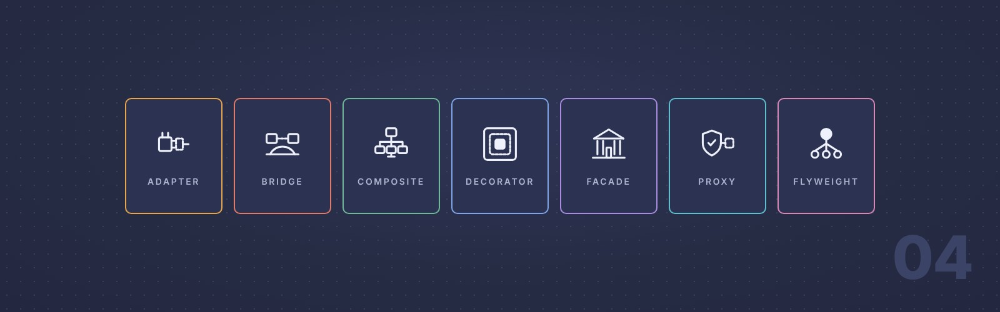

Unit 4: Design Patterns II – Structural Patterns
In brief: I built the seminar’s coffee shop in Python with the Decorator pattern, with 26 tests. Toppings wrap a coffee class that was never edited, and nine classes replace the 128 that subclassing would need. The pattern works cleanly only while every layer simply adds; a discount that alters the price made the order of layers matter, and the rules about order had to live outside the decorators.

This unit covers the seven structural patterns, Adapter, Bridge, Composite, Decorator, Facade, Proxy and Flyweight, and how they let classes and objects be composed into larger, flexible structures. It looks at their use in network security and asks for a coffee shop application built with the Decorator pattern. My coffee shop, its tests and a walkthrough notebook are stored below as the unit’s first artefact. The second is my contribution to the collaborative discussion on the Adapter, Bridge and Composite patterns. My seminar preparation, including the network security case study, and my reading notes follow.
Reflection
Structured using the What? So what? Now what? model (Rolfe, Freshwater and Jasper, 2001).
What?
Unit 4 moved from creating objects to composing them. I read chapters 2 and 3 of Di Francesco (2024), which cover Proxy, Decorator, Flyweight and Adapter in JavaScript and then the behavioural patterns. Because the book leaves out Bridge, Composite and Facade, I added chapters 8 to 14 and 30 of Sarcar (2022) and chapter 4 of Ayeva and Kasampalis (2024). For the exercise I built the seminar’s coffee shop in Python: an abstract Beverage, two base drinks, an abstract Topping that wraps any Beverage, six toppings, a loyalty discount and an order desk, with 26 tests (Artefact 1).
So what?
In Unit 3 I concluded that Factory Method only earned its extra classes when the creator had work of its own. Decorator justified itself much faster. With two base drinks and six toppings, a class for every combination would need 128 classes, while the decorator design needs nine, and adding a topping adds one class instead of doubling the count. A test confirms that Coffee names no topping at all, so the ‘existing class’ the brief describes really was left alone. That is the open/closed principle from Unit 2 achieved by composition rather than inheritance, which is how Sarcar (2022, ch. 9, Q&A 9.1) presents the pattern.
The readings disagree about what a decorator may add. Sarcar (2022, ch. 9) stresses that a decorator has the same interface as the object it wraps, yet in Q&A 8.7 he says decorators ‘can work on extended interfaces’. Di Francesco (2024, ch. 2) goes further: his InstrumentedHttpClient adds a requestTimings field, and he describes adding ‘new members’ as the reason decorators can stack. My test shows the opposite. A member added by one layer disappears as soon as another layer wraps it, because the outer layer only forwards the shared interface. Stacking and extending pull against each other, so I kept every topping to the Beverage interface.
Order was the more important finding. Toppings that only add a price give the same total in any order, and a test tries every permutation. A loyalty discount alters the price instead, so placing it inside the vanilla syrup leaves the syrup undiscounted. Sarcar (2022, Q&A 9.5) sees no significant disadvantages ‘if you are careful’, but each layer sees only the drink directly inside it, so the care cannot live in the decorators. My order desk, make_drink(), always puts the discount outermost and enforces limits, such as three sugars, that no single topping can see. Composition moves complexity out of the class hierarchy and into whatever assembles the layers.
The same pattern of naming confusion as in Unit 3 appeared. Ayeva and Kasampalis (2024, ch. 4) note that Python’s @ decorators have no one-to-one relationship with the pattern, and Di Francesco (2024, ch. 2) moves from a decorator class to an addTiming function. I wrote both forms. audited() wraps a function once, when the program is put together, whereas toppings wrap individual objects while it runs. They solve different problems and are only related by name.
The security reading made order feel less academic. In WSGI, middleware sits between a server and an application and plays both roles (Eby, 2010), so a stack of middleware is a stack of decorators around a request. If logging runs outside authentication it records requests that should have been rejected, and a security header added inside a compression layer may never be applied. My discount is the harmless version of that problem. The order desk also showed a structural pattern doing security work: it accepts only names from a read-only menu and never turns order text into attribute or class names, which tests with inputs such as __class__ confirm.
A limit remains. Milk(Espresso()) is a Beverage but not an Espresso, so any code that checks concrete types treats a decorated drink differently. That reinforces the Unit 2 lesson to depend on the abstraction rather than the class.
Now what?
Before using Decorator again I will ask whether each layer only adds or also alters. If any layer alters, I will make the order explicit in one place, as make_drink() does, and test it. I will keep decorators to the shared interface and expose anything extra through a method on the component, as layers() does. Unit 5 covers behavioural patterns, and I will compare a decorator stack with Chain of Responsibility, which Sarcar (2022, Q&A 30.8) distinguishes by whether every handler acts on a request. Finally, I will build a small WSGI middleware stack with authentication, logging and a security header and write tests that fail when the layers are put in the wrong order, ready for the secure coding units later in the module.
Artefact 1: A Coffee Shop Built with the Decorator Pattern
Seminar practical exercise. The design is in coffee.py, 26 unit tests and the module’s doctests are in test_coffee.py, and the walkthrough notebook is unit4_decorator_pattern.ipynb. Needs Python 3.10 or later and no third-party packages; run the tests with python -m unittest -v test_coffee and the demonstration with python coffee.py. coffee.py also passes mypy --strict.
The seminar asks for a coffee shop application in which toppings such as milk and sugar are added to a base coffee object at run time, enhancing an existing class without changing it. Each of the pattern’s four roles is a class: the component Beverage, the concrete components Coffee and Espresso, the abstract decorator Topping, which is a Beverage and holds one, and the concrete toppings. Figure 1 shows how they depend on each other.
![UML class diagram of the coffee shop. The abstract Beverage declares the abstract methods description and cost, plus layers and receipt_line. Coffee and Espresso extend Beverage as concrete components. The abstract decorator Topping also extends Beverage and wraps exactly one Beverage through the protected field _drink; it forwards description and cost and adds its own name and price. Milk, OatMilk, Sugar, VanillaSyrup, ExtraShot, WhippedCream and LoyaltyDiscount extend Topping, and a new topping can be added without editing coffee.py. The order desk, make_drink and main, builds Beverages from two read-only tables, BASES and TOPPINGS. The Python function decorator audited wraps make_drink.](artefacts/unit4/figures/u4_class_diagram.png)
Figure 1: Class diagram of the coffee shop.
Table 1 maps each requirement of the exercise to the code that meets it and the test or notebook result that shows it.
| Requirement | Implementation | Evidence |
|---|---|---|
| A base coffee object | Coffee, a concrete Beverage with a size, a description and a price in whole pence; Espresso is a second base | Coffee() is ‘Coffee (regular)’ at £2.50; Beverage() raises TypeError |
| Enhance an existing class without changing it | Coffee and Espresso contain no code for toppings | A syntax-tree check finds no topping class named in Coffee; wrapping a coffee leaves it unchanged |
| Toppings such as milk and sugar | Six concrete toppings extend the abstract Topping, which forwards to the drink it wraps and adds its own name and price | A contract test runs every topping over every base; Sugar(Milk(Coffee())) costs £3.05 |
| Added dynamically | Toppings are chosen at run time from data; make_drink() turns names on an order into layers | A drink is built from a list of names; 500 layers of sugar stack correctly |
| Demonstration | main() prints a receipt for four orders | The demonstration test and the notebook output below |
Table 1: Each requirement of the exercise and the evidence for it.
Further tests go beyond the brief. The order desk refuses anything not on its read-only menu, including names such as __class__, and enforces a limit of five toppings and three of any one. A new topping can be offered without editing coffee.py. A Python function decorator, audited(), logs every order and keeps the original function’s name through functools.wraps. Three tests record the limits discussed in the reflection: a decorated drink is no longer an instance of its base class, a member added by one decorator is hidden by the next, and a decorator that alters the price makes the order of layers matter. An extract of the notebook’s output:
Coffee (regular): £2.50
Coffee (regular), milk, sugar: £3.05
Coffee (large), oat milk, vanilla syrup, sugar, sugar: £4.10
Espresso, extra shot, whipped cream: £3.20
subclass per combination: 128
decorator design: 9 (Coffee, Espresso, Topping and one per topping)
OrderError: not on the menu: '__class__'
OrderError: at most 3 of each topping: sugar
AttributeError: 'Sugar' object has no attribute 'label'
Coffee (regular) > vanilla syrup > loyalty discount £2.66
Coffee (regular) > loyalty discount > vanilla syrup £2.70Artefact 2: Collaborative Discussion – Adapter, Bridge and Composite
Formative collaborative discussion, run within this unit. Posts are limited to 300 words. The full code is in the discussion folder: payment_adapter.py, remote_bridge.py and file_system_composite.py, with 21 unit tests and the modules’ doctests in test_structural.py; run them with python -m unittest -v test_structural. All three modules pass mypy --strict.
My initial post
1. Adapter. The platform expects a PaymentGateway that takes and returns JSON, but the legacy service only speaks SOAP XML with amounts in pence. Rewriting either side is risky, so SoapPaymentAdapter implements the modern interface and translates both ways: pounds to pence, JSON to an XML envelope, and codes such as ‘05’ to ‘declined’ (Sarcar, 2022, ch. 10). Building the XML with ElementTree rather than string formatting also stops request values injecting elements.
class SoapPaymentAdapter: # implements PaymentGateway
def charge(self, request: dict) -> dict:
envelope = self._to_soap(request) # JSON -> XML, £ -> pence
reply = self._service.process_payment(envelope)
... # XML codes -> JSON status2. Bridge. A subclass per pairing (BasicTVRemote, AdvancedRadioRemote) multiplies with every new device or remote. Instead, remotes hold a Device and use only its interface, so two remotes and two devices need four classes, and a projector needs no new remote. Unlike Adapter, Bridge is designed up front rather than applied to existing code (Ayeva and Kasampalis, 2024, ch. 4).
class RemoteControl:
def __init__(self, device: Device):
self.device = device
class AdvancedRemote(RemoteControl):
def mute(self):
self.device.set_volume(0)3. Composite. File and Folder share FileSystemComponent, so clients call size() on either and a folder sums its children. Folder.add() refuses duplicates and cycles, since a folder inside itself would recurse forever.
class Folder(FileSystemComponent):
def size(self) -> int:
return sum(child.size() for child in self)Question: I put add() only on Folder, choosing safety over the transparency Sarcar (2022, Q&A 13.5) prefers. Which would you choose?
What the code adds beyond the post
The tests check that the adapter sends the amount in pence, maps every legacy status, refuses non-GBP and badly formatted amounts before calling the legacy service, turns a SOAP fault into an exception and escapes a card token written to inject XML. For the Bridge, every remote is run against every device, a projector defined only in the test file works with the existing remotes, and a check of their source confirms the remotes never name a concrete device. For the Composite, folder sizes sum through a 200-level tree, and duplicates, cycles and names such as .. are refused.
Peer responses and follow-up posts
To be added as the discussion develops: peers’ responses, my two follow-up posts and the agreed final version of the code.
Seminar Preparation
The seven structural patterns
Table 2 summarises the purpose of each pattern, using the Gang of Four definitions as Sarcar (2022) quotes them, with an example from the readings and a use in security.
| Pattern | Purpose | Example in the readings | Security use |
|---|---|---|---|
| Adapter | Converts the interface of a class into the one clients expect, so classes with incompatible interfaces can work together (ch. 10) | A UuidFactory adapted to the IdGenerator interface a database expects (Di Francesco, 2024, ch. 2) | Wrapping a legacy authentication or logging system behind the interface a new service expects, without editing either |
| Bridge | Decouples an abstraction from its implementation so the two can vary independently (ch. 14) | Content fetched from different sources through one abstraction; device drivers and payment gateways (Ayeva and Kasampalis, 2024, ch. 4) | One encryption or alerting abstraction with interchangeable back ends |
| Composite | Composes objects into trees so that single objects and groups are treated uniformly (ch. 13) | An organisation chart in which a head of department and an employee share one interface (Sarcar, 2022, ch. 13) | Nested firewall rule groups or access policies evaluated through the same method as a single rule |
| Decorator | Attaches responsibilities to an object dynamically, as an alternative to subclassing (ch. 9) | InstrumentedHttpClient recording request timings (Di Francesco, 2024, ch. 2); Java’s BufferedOutputStream (Sarcar, 2022, Q&A 9.9) | Cross-cutting concerns such as validation, logging and encryption (Ayeva and Kasampalis, 2024, ch. 4); WSGI middleware (Eby, 2010) |
| Facade | Provides a unified, higher-level interface to a set of interfaces in a subsystem (ch. 11) | An OperatingSystem class starting file and process servers (Ayeva and Kasampalis, 2024, ch. 4) | One safe entry point that applies checks consistently, as my order desk does, though callers can still reach the subsystem directly (Sarcar, 2022, Q&A 11.3) |
| Proxy | Provides a surrogate or placeholder for another object to control access to it (ch. 8) | A redaction proxy that hides sensitive output (Di Francesco, 2024, ch. 2); remote, virtual, protection and smart proxies (Ayeva and Kasampalis, 2024, ch. 4) | A protection proxy that blocks access to websites (Sarcar, 2022, Q&A 8.6) or checks privileges before sensitive data is read |
| Flyweight | Uses sharing to support large numbers of fine-grained objects efficiently (ch. 12) | Coins sharing their amount and currency through a flyweight factory (Di Francesco, 2024, ch. 2) | Sharing immutable rule or signature objects across millions of inspected packets; shared state must then be immutable |
Table 2: The seven structural patterns. Chapter numbers in the purpose column refer to Sarcar (2022).
How structural patterns make code modular
Di Francesco (2024, ch. 2) explains the ‘structural’ label: implementations can change freely while the interfaces they expose stay stable. Each pattern puts a stable interface at a boundary. Adapter and Facade sit at the edge of code that cannot or should not change, Bridge separates two hierarchies so that each can grow alone, Decorator and Proxy put a layer between a client and an object, Composite hides whether a client holds one object or many, and Flyweight separates shared state from the state each object owns. In a large system this limits how far a change travels. The cost, which every chapter of Sarcar (2022) lists in its Q&A, is an extra layer to maintain and debug, and a proxy or adapter that changes an exception can hide the real cause of a failure (Q&A 8.9).
My question: Bridge or Adapter?
The two look alike in code, because both put an object behind an interface it does not implement itself. The difference is intent and timing. Ayeva and Kasampalis (2024, ch. 4) say that Adapter is applied afterwards to make unrelated classes work together, while Bridge is designed up front to decouple an abstraction from its implementation. Sarcar (2022, Q&A 14.5) warns against matching a pattern to an implementation by its shape and says the intent decides: Adapter assumes the incompatible interfaces already exist. My working rule is that if I am writing both sides now, it is a Bridge, and if one side already exists and cannot change, it is an Adapter. Questions I will bring to the seminar are whether a Bridge that later gains a third-party implementation is then also using an Adapter, and whether a Python Protocol makes the Bridge’s implementor hierarchy unnecessary.
Case study: structural patterns in network security
Network software is full of these patterns. Python’s ssl module creates an SSLSocket by passing an existing socket to SSLContext.wrap_socket() (Python Software Foundation, 2026), so a TLS connection is an ordinary socket with encryption wrapped around it, a decorator over a socket interface. WSGI middleware plays the server to the application below it and the application to the server above it (Eby, 2010), which is the Decorator shape applied to whole requests, and the same specification lists forwarding requests over a network, a remote proxy. A protection proxy controls who reaches an object (Sarcar, 2022, Q&A 8.6), which is the role a web filter or reverse proxy plays for a network. A firewall policy built from rule groups that contain rules is a Composite, and a single security API in front of several logging and alerting products is a Facade.
The patterns help security because they create one place to enforce a control without changing the protected code. They also carry risks that my artefact showed on a small scale. A control applied by wrapping protects only callers who go through the wrapper, just as a Sedan() could bypass the factory in Unit 3. The order of layers is part of the security design, so authentication has to sit outside anything that acts on a request. Each extra layer is also more code that can fail or hide an error. My conclusion for the seminar is that structural patterns make it easier to add security controls, but tests need to check how the layers are assembled as well as what each one does.
Reading Notes
Di Francesco (2024), chapters 2 and 3 (required). Chapter 2 defines structural patterns as ways of managing the relationships between objects so that functionality can be added, removed or changed safely while interfaces stay stable. It covers four of the seven patterns. Proxy is shown first as a redaction class and then with JavaScript’s built-in Proxy and Reflect objects, with the reactivity systems of Vue.js and Alpine.js as real uses. Decorator wraps an HTTP client to record request timings, then becomes a higher-order function. Flyweight shares the amount and currency of coins in a wallet through a factory with a private cache. Adapter fits a UUID generator and a counter to a database’s IdGenerator interface. A recurring theme is that first-class functions let JavaScript replace a pattern’s classes with functions. Bridge, Composite and Facade are not covered, so I used Sarcar and Ayeva for those. Chapter 3 moves on to behavioural patterns, organising communication between objects: Observer and the web’s EventTarget, State and Strategy in class and function forms, and Visitor. I read it as preparation for Unit 5, and its framing of every pattern as a way to extend code without modifying it links back to the open/closed principle.
Sarcar (2022), chapters 8 to 14 and 30 (additional). One chapter for each structural pattern in Java, each with the Gang of Four definition, a real-world and a programming example, and a Q&A session. The Q&A sessions were the most useful part for the seminar questions: proxies versus decorators (8.7), why composition beats inheritance for adding behaviour (9.1), how Facade differs from Adapter (11.4), the costs of Flyweight and Composite, and the comparison of Bridge and Adapter (14.5). Chapter 30 collects similar comparisons across all the patterns, including Decorator against Chain of Responsibility and Adapter. The decorator example adds luxury features to the price of a home, which is close in shape to the coffee shop, and it keeps prices as double, which is one reason I held prices in whole pence.
Ayeva and Kasampalis (2024), chapter 4 (additional). The structural patterns in Python, apart from Composite. Useful for Python specifics: Python’s decorator syntax is distinguished from the pattern, the decorator example is a memoisation function using functools.wraps, and decorators are recommended for cross-cutting concerns such as validation, logging and encryption. The chapter compares Bridge with Adapter directly, lists the four kinds of proxy, and gives the Requests library as an example of a facade.
References
Ayeva, K. and Kasampalis, S. (2024) Mastering Python design patterns: craft essential Python patterns by following core design principles. 3rd edn. Birmingham: Packt Publishing. Chapter 4. Available at: https://www.oreilly.com/library/view/mastering-python-design/9781837639618/ (Accessed: 27 November 2026).
Di Francesco, H. (2024) JavaScript design patterns: deliver fast and efficient production-grade JavaScript applications at scale. Birmingham: Packt Publishing. Chapters 2 and 3. Available at: https://www.oreilly.com/library/view/javascript-design-patterns/9781804612279/ (Accessed: 27 November 2026).
Eby, P.J. (2010) PEP 3333 – Python Web Server Gateway Interface v1.0.1. Python Software Foundation. Available at: https://peps.python.org/pep-3333/ (Accessed: 27 November 2026).
Python Software Foundation (2026) ssl – TLS/SSL wrapper for socket objects. Available at: https://docs.python.org/3/library/ssl.html (Accessed: 27 November 2026).
Rolfe, G., Freshwater, D. and Jasper, M. (2001) Critical reflection for nursing and the helping professions: a user’s guide. Basingstoke: Palgrave Macmillan.
Sarcar, V. (2022) Java design patterns: a hands-on experience with real-world examples. 3rd edn. Berkeley, CA: Apress. Chapters 8–14 and 30. Available at: https://www.oreilly.com/library/view/java-design-patterns/9781484279717/ (Accessed: 27 November 2026).